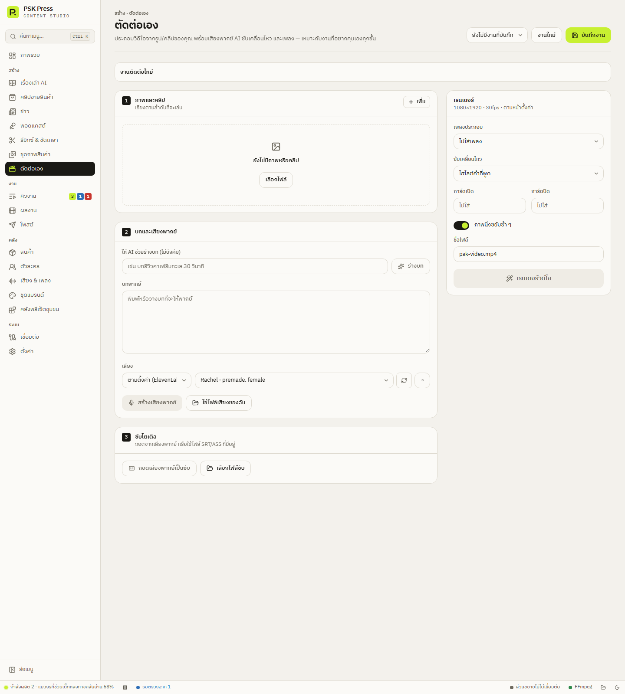

สร้างงาน
ตัดต่อเอง
ประกอบวิดีโอจากรูปและคลิปของคุณเอง พร้อมเสียงพากย์ AI ซับเคลื่อนไหว เพลง และการ์ดเปิด-ปิด — บันทึกงานไว้แก้ต่อได้


จัดการงาน
- ตั้งชื่องานในช่องชื่อ (ค่าเริ่มต้น “งานตัดต่อใหม่”)
- บันทึกงาน — เก็บงานไว้แก้ต่อ เปิดงานเดิมได้ที่ เปิดงานที่บันทึก…
- งานใหม่ — เริ่มงานใหม่ (ถามก่อน)
- ไอคอนถังขยะ ลบงานที่บันทึก — ลบงานที่เลือก
ขั้นที่ 1 — ภาพและคลิป
กด เพิ่ม หรือ เลือกไฟล์ แล้วเรียงตามลำดับที่จะเล่นด้วยปุ่มเลื่อนขึ้น/ลง
- ภาพนิ่งตั้งเวลาแสดงได้ (ค่าเริ่มต้น 4 วินาที)
- คลิปวิดีโอเล่นทั้งคลิป
ขั้นที่ 2 — บทและเสียงพากย์
- ให้ AI ช่วยร่างบท (ไม่บังคับ) → ร่างบท — บอกหัวข้อ แล้ว AI จะเขียนบทให้
- บทพากย์ — แก้ได้ตามต้องการ
- เลือก เสียง แล้วกด สร้างเสียงพากย์ (เลือกที่เก็บไฟล์ mp3) หรือ ใช้ไฟล์เสียงของฉัน
ขั้นที่ 3 — ซับไตเติล
- ถอดเสียงพากย์เป็นซับ — แก้ข้อความที่ได้ แล้ว บันทึกเป็น .srt (ต้องมีคีย์ OpenAI)
- เลือกไฟล์ซับ — ใช้ไฟล์ SRT/ASS ที่มีอยู่
- ไม่ใช้ซับ
เรนเดอร์
- เพลงประกอบ และ ความดังเพลง (ค่าเริ่มต้น 12%)
- ซับเคลื่อนไหว (ค่าเริ่มต้น ไฮไลต์คำที่พูด)
- การ์ดเปิด / การ์ดปิด — ข้อความเต็มจอตอนต้นและท้ายคลิป
- ภาพนิ่งขยับช้า ๆ
- ชื่อไฟล์ (ค่าเริ่มต้น
psk-video.mp4)
กด เรนเดอร์วิดีโอ เมื่อเสร็จจะมีตัวเล่นวิดีโอและปุ่ม เปิดโฟลเดอร์
ขนาดวิดีโอ FPS และหน้าตาการ์ด (ความยาว สีพื้น สีตัวอักษร ฟอนต์) ตั้งที่ ตั้งค่า → การเรนเดอร์ → หน้าตัดต่อเอง
หน้านี้เรนเดอร์ทันทีในหน้า ไม่ได้ผ่านคิวงาน ให้อยู่ที่หน้านี้จนเรนเดอร์เสร็จ